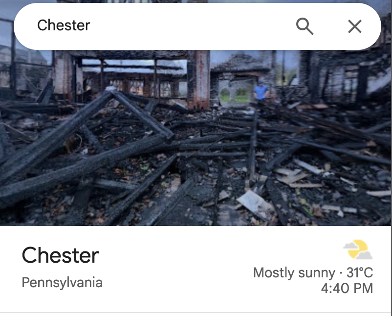

A Long Curve
My views on energy transition have followed a long curve. They developed gradually from how I understand environment, geography, uncertainty, and eventually public policy.
Trained in geography and environmental studies as an undergraduate, I once believed that the energy transition was almost self-evidently justified. If the current energy system had major flaws and imposed large external costs, then the answer seemed straightforward: we needed renewable energy and we needed the transition.
Over time, however, more training, reading, and exploration changed how I approached the question. I no longer want to begin with a political position and then selectively search for evidence that supports it, while dismissing evidence that challenges it as lobbying or politically motivated.
Instead, I want to understand how one conclusion follows from another through a traceable chain of reasoning and analysis: from identifying an environmental problem, to understanding its causes, to evaluating and comparing possible interventions, and finally to deciding whether changing the status quo is justified.
My Starting Point
I started college as an Environmental Studies and Policy major at SUNY Binghamton.
My environmental education exposed me to Aldo Leopold’s A Sand County Almanac and Sketches Here and There. At the time, I strongly identified with Leopold’s idea of environmental stewardship and his way of “thinking like a mountain.” I believed that humans had a responsibility to care for the natural ecosystems around us rather than simply treating nature as a resource to be consumed.
That idea was intuitive to me: we, as humans, should be stewards of the environment.
That belief has never left me. What changed was my understanding of what environmental stewardship actually requires.
As I moved further into geography and took more courses in geology and environmental science, the natural environment became more complicated than the simple relationship between human action and environmental harm that I had initially imagined.
Geography taught me how to think spatially. Environmental benefits and costs are not distributed evenly across space. The same policy can create very different outcomes for different communities. Environmental improvement measured at one scale does not necessarily mean an improvement for everyone.
Geology added another dimension: time. Natural systems operate across time scales far longer than most political and economic decisions. What we observe today cannot always be directly projected thousands or millions of years backward or forward. At the same time, human intervention can alter these systems in ways whose consequences may not become visible immediately.
The more I learned, the more difficult it became to think about environmental problems through a direct chain of problem → action → solution.
That did not make me doubt the existence of environmental problems. Pollution is real. Global warming is real. Sea-level rise is real. Environmental degradation is real. Human activities can impose substantial costs on ecosystems and on other people.
What changed was my confidence that identifying a climate problem was, by itself, enough to establish either the urgency of action or what should be done about it—especially what must be done immediately.
The existence of a problem, the urgency of that problem, and the justification for a particular intervention are related questions. But they are not the same question.
Environmental Problems and Uncertainty
Uncertainty is one critical dimension of how I understand environmental problems.
Environmental science rarely gives us complete certainty. Measurements may contain error. Models depend on assumptions. Forecasts depend on those models. The effects of climate change vary across locations and over time. Even when we understand the direction of an effect, its magnitude, distribution, and future trajectory may remain uncertain.
I do not see uncertainty as a reason to reject science, nor as a reason to reject climate change. Quite the opposite: acknowledging uncertainty is part of taking science seriously.
But uncertainty creates a policy problem.
We cannot require perfect knowledge before taking action. Waiting has consequences as well, and some environmental damages may become difficult or impossible to reverse.
At the same time, the existence of uncertainty does not give us permission to skip the analytical steps between identifying a problem and choosing a solution.
Evidence that a problem exists does not, by itself, tell us that a particular intervention is the right response.
The distinction became increasingly important to me as I moved from studying environmental systems toward studying public policy.
Suppose we establish that an activity creates an environmental externality. That gives us a reason to consider intervention or regulation. But it does not yet tell us whether the appropriate policy response is a tax, a subsidy, a regulation, a ban, direct compensation, public investment, or no immediate intervention at all.
Each option operates through a different mechanism. Each has different costs and distributes them differently. And each depends on its own assumptions about how people, firms, technologies, and environmental systems will respond.
Environmental stewardship, as I understand it through “thinking like a mountain,” requires more than identifying environmental harm and demanding action.
It also requires understanding what our actions will actually do.
From Environmental Problems to Renewable Energy
Renewable energy, by the definition of the United Nations, is energy derived from natural sources that are replenished at a higher rate than they are consumed, such as solar and wind. Fossil fuels—coal, oil, and gas—are non-renewable resources that take hundreds of millions of years to form. When burned to produce energy, they cause harmful greenhouse gas emissions, such as carbon dioxide.
When I first encountered the term as an undergraduate, the logic seemed straightforward. Renewable energy was presented as cleaner, increasingly affordable, and based on resources that would not be depleted in the same way as fossil fuel. My first reaction was simple: why should this not become our default source of energy?
The comparison seemed almost one-sided. If one source produces substantial environmental externalities while another can generate energy with fewer of them, replacing the former with the latter appears desirable and obvious. As technology improves and cost declines, the buy-in should become even stronger.
That was also how I initially thought about the energy transition. The existing system had a problem. Renewable energy offered a cleaner and cheaper alternative. Therefore, accelerating the transition was the strongest intervention.
But once I started applying the same questions I had learned to ask of environmental systems and public policy, this comparison became more complicated.
First, an energy source does not exist in isolation. Solar and wind require land, materials, transmission infrastructure, additional storage, and eventually a connection to the grid. Their environmental costs are different from those of fossil fuel, but different does not mean nonexistent. A solar project can reduce carbon emissions while creating land-use conflicts. A wind project can produce clean electricity while affecting landscapes and ecosystems.
This does not make renewable energy equivalent to fossil fuels. It means that the comparison here is not environmental cost versus no environmental cost, but rather the type, magnitude, location, and timing of different costs.
The second problem is that technological superiority and policy intervention are different questions. And this distinction is not unique to energy.
Consider gene editing. A new gene-editing technology may become more precise, cheaper, and technically superior to previous methods for treating inherited diseases. It may allow us to prevent certain diseases or alter biological characteristics in ways that were previously impossible. These technological improvements give us strong reasons to explore and use the technology where appropriate.
But this does not imply that we should implement it across society or use public funding to promote its adoption on a large scale. Every technological advancement involves trade-offs. Gene editing may carry risks of side effects and raise serious ethical concerns.
The fact that we can edit a gene more accurately does not tell us whether we should use that technology in every possible application, how quickly it should be adopted, where the boundary of acceptable use should be drawn, or whether the government should actively accelerate its adoption.
The same distinction applies to energy. Technological progress can make a transition possible and desirable. It does not, by itself, tell us how quickly that transition should occur or what public policy should require.
New Technology and Path Dependence
One question kept circling back: if a technology becomes better, why does the older technology sometimes remain dominant?
One of the classic cases in path dependence and lock-in shows up this tension: the history of the QWERTY keyboard.
Have you ever wondered why nearly every computer keyboard still uses the same QWERTY arrangement?
QWERTY did not begin as the obvious or scientifically determined best way to lay out a keyboard. During the early development of the typewriter, Christopher Latham Sholes experimented repeatedly with different letter arrangements. His team produced roughly fifty prototypes between 1867 and 1873, each building on the previous design.
The usual explanation is mechanical: early typewriters used typebars that could clash with one another, so the designers are said to have rearranged the keys partly to reduce collisions between nearby typebars. That account remains common, though the history is not entirely settled. Yasuoka and Yasuoka (2011), for example, trace the early Type-Writer keyboard partly to the Hughes-Phelps printing telegraph and reject the popular claim that Sholes deliberately designed QWERTY to slow typists down.
What is clear is that the layout emerged through trial and error under the technological constraints of its time, not from a general theory of efficient typing.
The design also evolved through a series of ordinary business decisions. James Densmore, a partner who provided financial backing and became a driving force behind the machine’s continued development after Samuel Soule left the enterprise, pushed it toward commercialization. In early 1873, the manufacturing rights were acquired by E. Remington and Sons, an arms manufacturer seeking to diversify. Remington further refined the typewriter before placing it on the market on July 1, 1874.
Its mechanics continued modifying the design, bringing the keyboard closer to the QWERTY layout we recognize today. One of those changes was small but revealing: at one point, the period occupied the position where the letter “R” now sits.
But explaining how QWERTY emerged does not clarify why it stayed.
Commercialization did not guarantee QWERTY’s survival. Other typewriters and other keyboard arrangements existed. What gradually made QWERTY more difficult to displace was that the keyboard became connected to the people who learned to use it.
As typewriting spread through offices in the late nineteenth century, typing became a marketable skill. Workers invested time in learning a particular keyboard layout, while employers wanted typists who could immediately operate the machines already in their offices. Training schools, in turn, had an incentive to teach the layout most likely to help their students find jobs.
The relationship began to reinforce itself.
More employers using QWERTY machines increased the value of learning QWERTY. More workers trained in QWERTY made QWERTY machines more attractive to employers. As the pool of trained QWERTY typists expanded, manufacturers had even stronger incentives to produce machines compatible with the dominant standard.
The famous 1888 typing competition in Cincinnati became part of this process. Frank McGurrin, who had developed a method of typing without looking at the keyboard, won a publicized contest using a QWERTY-equipped Remington.
Paul David’s argument in Clio and the Economics of QWERTY
David identifies several mechanisms behind this self-reinforcing process. Technical interrelatedness connected the choice of keyboard to the skills of typists and the equipment owned by firms. Once touch typing spread, the layout in the machine and the layout in the typist’s memory had to match. Economies of scale made the standard more attractive as more people used it. And quasi-irreversibility of investment meant that learning to type was costly to undo: once workers had invested in QWERTY-specific skills, switching layouts required additional time and retraining.
The result is path dependence.
A choice made under one set of historical circumstances can change the incentives surrounding later choices. As investments accumulate around that choice, the system becomes progressively more difficult to leave.
A worker choosing to learn QWERTY may be making a rational decision because employers use QWERTY. An employer buying a QWERTY machine may also be making a rational decision because most trained typists know QWERTY. A training school teaching QWERTY may be responding rationally to the labor market. Yet all of those individually rational decisions reinforce the same technological path.
This was the part of David’s argument that stayed with me: the reason a technology was originally adopted does not have to be the same reason it continues to survive.
However, David’s story seems almost too convincing.
If QWERTY emerged partly from historical contingency and then became reinforced through increasing returns and switching costs, one question raises itself:
Was QWERTY actually inferior?
Was QWERTY really inferior? — Liebowitz and Margolis
Their argument does not require denying that history matters or that switching costs exist. Instead, they challenge a critical premise behind the QWERTY story: that QWERTY survived despite being demonstrably inferior to an available alternative.
The Dvorak Simplified Keyboard.
Patented in 1936 by August Dvorak and William Dealey, roughly sixty years after QWERTY, the Dvorak keyboard was deliberately designed around letter frequency, hand alternation, and finger movement. Dvorak appeared to offer a keyboard designed around typing efficiency.
If Dvorak allowed people to type substantially faster and more efficiently, were users stuck with QWERTY simply because of training costs and an established standard? Was this lock-in?
Liebowitz and Margolis, however, went back to the evidence behind Dvorak’s claimed superiority, and found the case much less convincing.
One influential source was a U.S. Navy study conducted during World War II that reported large productivity gains after typists were retrained on the Dvorak keyboard. Liebowitz and Margolis questioned both the study and the way its findings had subsequently been repeated. They emphasize that the experiments were conducted under the direction of Lieutenant Commander August Dvorak himself—the co-owner of the Dvorak keyboard patent—a fact not disclosed in the report. Their verdict is blunt: on their reading, the study was heavily biased in favor of the Dvorak arrangement.
They also pointed to a 1956 experiment by the General Services Administration, designed by Earle Strong, which found QWERTY typists to be about as fast as Dvorak typists, or faster. Strong was not a disinterested party either; he had spoken openly beforehand about wanting to keep the standard keyboard. The record is thin on both sides.
Their claim was not that QWERTY had been scientifically proven superior.
It was that Dvorak had not been convincingly proven superior enough to establish QWERTY as an inefficient technological lock-in.
That distinction changed how I read the QWERTY story.
David provides a convincing mechanism for why a technological path can reinforce itself. But identifying a mechanism that can preserve an inferior technology is not the same as demonstrating that the technology being preserved is actually inferior.
The narrower point Path dependence can explain persistence without proving inefficiency.
David would not necessarily disagree with the narrower point that persistence alone does not prove inefficiency. In his later replies, however, he argues that Liebowitz and Margolis are asking the wrong question when they reduce path dependence to whether an observed outcome can be profitably “remedied.” For David, the important question is how historical sequences can select among multiple possible outcomes and shape what becomes possible later.
Liebowitz and Margolis are more interested in the welfare claim. If an allegedly superior alternative cannot generate benefits large enough to justify the cost of switching, in what meaningful sense is society locked into an inefficient outcome? They ultimately make a much broader claim than the keyboard case itself: that convincing empirical examples of inefficient lock-in are extremely difficult to establish.
The disagreement therefore concerns more than QWERTY. The two sides are partly asking different questions.
One is a welfare question: would switching produce benefits greater than its costs?
The other is a dynamic question: could history have selected among multiple possible technological paths, making later choices dependent on earlier ones?
That leaves two separate empirical questions:
1. Why does the existing technology persist?
2. Would society be better off switching away from it?
The first can be answered by history, institutions, switching costs, and investments. The second requires a comparison of actual benefits and costs.
This disagreement became particularly useful to me because neither side, by itself, gives me the answer I want for energy transition.
David warns me not to assume that markets will automatically replace an inferior technology because something better becomes available.
Liebowitz and Margolis warn me not to infer from the persistence of an old technology that it must therefore be inefficient.
What I keep Persistence requires explanation. Inefficiency requires evidence.
Back to Energy: From Transition to Distribution
The QWERTY debate changed how I think about technological transition, but energy is not a keyboard.
The existing energy system is embedded in power plants, transmission networks, pipelines, vehicles, buildings, regulations, supply chains, and worker skills accumulated over decades. David’s argument gives me a reason to take that history seriously. A cleaner or cheaper technology does not enter an empty system, and technological improvement does not guarantee an immediate transition.
Liebowitz and Margolis add a different question. Even if an alternative appears superior, we still need to ask whether replacing the existing system produces benefits greater than the full costs of switching.
But energy introduces another dimension that the keyboard example does not capture.
The dimension a keyboard misses Even if the benefits of transition exceed the costs in aggregate, those benefits and costs do not necessarily fall on the same people or in the same places. Nor can we ignore the communities that have already borne the costs of the older, dirtier energy system for decades.
What Power Lines Opened Up
This is where Power Lines: The Human Costs of American Energy in Transition became particularly interesting to me.
First of all, I love Power Lines. It brings together a substantial range of stories about energy injustice, monopoly power, regulation, and energy transition across the United States, from coast to coast. More importantly, it opened a new door for me: an energy transition can pursue a cleaner future without being a just transition.
The injustice begins long before the transition itself.
Communities shaped by decades of racial discrimination, segregation, and exclusionary zoning have often borne a disproportionate share of pollution and other environmental externalities. Power plants, industrial facilities, highways, and other undesirable land uses were not distributed randomly across American cities. The environmental costs of the old energy system therefore accumulated unevenly across both people and places.
On the other hand, some of the same households that bear greater environmental burdens also struggle to afford the energy they need in everyday life. An electricity bill is not optional for most households. When energy prices rise, fees accumulate, or utilities disconnect customers who cannot pay, the consequences fall most heavily on households with the least financial flexibility.
This made me realize that “energy cost” can mean very different things depending on where we stand. To an economist or utility, it may mean the cost of generating and delivering a kilowatt-hour of electricity. To a household, it may mean whether there is enough money left after paying the electric bill for food, rent, or other necessities. To a community near an energy facility, the cost may include pollution that never appears on the monthly bill at all.
Then there is another layer: the benefits of sound policies designed to fix the system can also be distributed unevenly.
A tax credit for rooftop solar, an electric vehicle, home electrification, or energy-efficiency improvements may look broadly available on paper. But the ability to use that benefit depends on circumstances. A homeowner can decide whether to install solar panels; a renter usually cannot make the same decision about the roof. A higher-income household may have the money or access to financing necessary to make an upfront investment and claim a tax benefit later; a household struggling with its monthly electricity bill may not.
Bureaucratic and administrative barriers, as well as unequal access to information, can make even programs designed specifically for lower-income households difficult to use.
Take energy-bill assistance as an example. In some states, lower-income residents may qualify for assistance with their utility bills or other energy-related benefits. But eligibility on paper does not guarantee access in practice. Without effective and targeted outreach, eligible residents may not even know that a program exists. Application requirements, deadlines, documentation, and eligibility rules create additional barriers.
Program design can sometimes make the problem even worse. A household already struggling to keep its electricity connected may miss the window in which assistance would have been most useful. By the time service is disconnected, the household may face additional barriers to receiving assistance, while also accumulating shutoff fees, reconnection charges, and unpaid balances.
The result can become a trap: the further a household falls behind, the more expensive and administratively difficult it becomes to recover.
In other words, a program can exist, have a progressive objective, and even provide substantial benefits to the people who successfully use it, while still failing to reach some of the people who need it most.
But suppose we do better.
Suppose assistance programs actually reach the households that need them. Suppose renewable energy continues to become cleaner and cheaper. Suppose we accept that moving away from fossil fuels will produce substantial environmental benefits.
Even then, the distributional problem does not disappear.
Closing a coal mine, refinery, or fossil-fuel power plant does more than remove a source of emissions. It also removes an employer, a source of local income, and often part of a community’s tax base. Workers may lose relatively well-paid and unionized jobs. Local businesses may lose customers. Municipal governments may lose revenue that supports schools, public services, and infrastructure.
The benefits and losses also operate at very different geographic scales.
The environmental benefits of reducing greenhouse-gas emissions are widely dispersed. Cleaner air may benefit a region, and lower carbon emissions contribute to benefits extending far beyond the community where a facility closes. But the economic losses created by that closure can be intensely local.
A worker who loses a job in a fossil-fuel industry does not necessarily receive one of the new jobs created by renewable energy. A town that loses a power plant does not automatically receive the investment generated by a new solar or wind project somewhere else, because of local natural constraints. A county that loses part of its tax base cannot finance its schools with the aggregate national benefits of lower carbon emissions.
This is why the statement that an energy transition will “create jobs” has never fully satisfied me.
It may be completely true in aggregate. The transition may create as many jobs as it destroys, or even more. But aggregate job replacement is not individual or spatial replacement.
The new job may require different skills. It may pay a different wage. It may not be unionized. It may appear several years later. Most importantly, it may be hundreds or thousands of miles away from the worker or community that experienced the loss.
A national balance sheet can therefore show a net benefit while particular workers and places experience substantial losses.
This does not mean that a fossil-fuel facility should remain open forever because someone depends on it. The pollution and environmental externalities created by the existing system are real costs too. Protecting every existing job regardless of those costs would privilege one distribution of benefits and harms over another.
But calling the transition a net social benefit does not make its concentrated losses disappear either.
And this brings me to a question that sits underneath the entire discussion of distribution:
Who decides that this trade is worth making?
If one community bears the economic cost of closing a facility while people elsewhere receive much of the environmental benefit, who has the authority to weigh those interests against each other?
If workers are asked to give up jobs today in exchange for broader benefits that may emerge elsewhere and over decades, what obligation do the beneficiaries of that transition have toward the people being asked to bear its immediate costs?
And if a policy produces a net benefit in aggregate but leaves a particular community worse off, is aggregate welfare enough to justify the decision?
At that point, the energy transition is no longer only a question of technology, environmental science, or even distribution.
It becomes a question of power.
- Who decides?
- Authority
- Who pays?
- Burden
- Who benefits?
- Gain
Chester, Pennsylvania
For me, this is not a hypothetical question.
Less than twenty miles from where I study in Philadelphia is Chester, Pennsylvania. I had previously worked on a planning studio in Chester, spending time walking around the city, exploring its neighborhoods and waterfront, and studying its economy. Long before I read Power Lines, Chester had already given me a real-world example of how difficult it is to separate environmental justice from economic survival, local government, and political power.
Chester was once an important industrial city along the Delaware River. Shipbuilding, manufacturing, and other industries provided employment and supported the city’s tax base. But like many older industrial cities, Chester experienced severe deindustrialization, population loss, racial segregation, and fiscal decline. Political corruption and weak governance compounded these problems over decades.
The industries disappeared, but Chester did not become a clean post-industrial city. Even today, the cover photo Google Maps shows for Chester, PA is a burned-out, uninhabitable house.

Along the Delaware River today sits the Reworld Delaware Valley Resource Recovery Facility, formerly operated under the Covanta name: a massive waste-to-energy incinerator. Much of what it burns does not originate in Chester. Garbage arrives from across the region, including Philadelphia.
People throughout the region produce the waste. Philadelphia and other municipalities need somewhere to send their trash. The incinerator turns part of that waste into electricity.
But the facility is physically located in Chester.
The trucks arrive in Chester. The smokestacks are in Chester. Whatever environmental and health risks the facility creates are concentrated most immediately around Chester. You can smell the trash while walking along the Chester waterfront. Residents have organized against waste facilities and industrial pollution for decades, arguing that their city has become a dumping ground for environmental burdens created by wealthier communities elsewhere.
Who benefits from it? If all residents suffer from it, why not close it?
Chester is not a wealthy municipality choosing between pollution and prosperity from a position of financial security. The city has struggled financially for decades and eventually filed municipal bankruptcy. Revenue associated with the incinerator became part of the fiscal structure of a city desperately searching for ways to fund itself.
The facility also provides jobs. Some workers defend those jobs precisely because they are stable and relatively well paid. For a worker supporting a family in Chester, “close the polluter” and “eliminate my job” can derive from the same policy.
So imagine that tomorrow we decide the environmental evidence is overwhelming and the incinerator should close.
Perhaps that is the correct decision for long-term health and benefit.
Chester residents would no longer bear the same environmental burden from the facility. But where would Philadelphia’s trash go? If it is transported to another low-income community, have we solved the environmental justice problem or merely moved it?
If it goes to a landfill farther away, what are the environmental and transportation consequences of that alternative?
What happens to the workers at the Chester facility?
What happens to the revenue received by a city already struggling to maintain basic fiscal stability?
And if Philadelphia and surrounding communities have enjoyed the benefit of sending their waste to Chester for decades, should Chester alone be responsible for the economic cost of ending that arrangement?
This is where a simple instruction to “close the polluting facility” becomes inadequate.
Closing the dirty. What’s next?
This connects to a second puzzle that kept circling back in my mind after I finished the Chester studio: even if we close the polluting facility, why would new businesses come to Chester?
Closing an undesirable facility can remove an environmental burden. It does not automatically create an economic opportunity.
This sounds obvious, but it matters enormously for how we think about transition.
Suppose the incinerator closes. Chester becomes cleaner. The trucks disappear. The smell along the waterfront improves. Land becomes available for redevelopment. From a planning perspective, all of these changes may make the city more attractive.
But none of them guarantees that a company will invest there, or that local business will revive.
A business deciding where to locate considers much more than whether a polluting facility is nearby. It considers access to workers and customers, transportation, infrastructure, land costs, taxes, municipal services, schools, safety, financing, regulatory uncertainty, and the expected return relative to other locations in the region.
If you are investing in a bar or a high-tech company, the natural question is not why Chester? It is: why Wilmington? Why Philadelphia? Or even why Camden?
This creates a second spatial problem.
The economic activity that replaces an old industry does not have to appear where the old industry disappeared.
Pennsylvania can close a fossil-fuel power plant and simultaneously gain renewable-energy investment. National employment can increase. The transition can look successful on a state or national balance sheet.
But the new investment may go to another county.
The new jobs may go to another labor market.
The new tax base may go to another municipality.
For the community that lost the original facility, economic replacement in aggregate is not economic replacement in place.
This was something I had already encountered in Chester before I had the language of energy transition to describe it. In planning, we can identify undesirable land uses, redesign the waterfront, propose new zoning, and imagine what a cleaner and more productive future might look like.
But a plan cannot order private investment to arrive.
Removing what we do not want is fundamentally different from creating the conditions for what we do want.
That distinction matters for a “just transition.” If a policy closes an old facility and then points to jobs created elsewhere as evidence that the economic loss has been replaced, it may be correct statistically while being almost meaningless geographically.
For Chester, the relevant question is not simply whether the transition creates new jobs. It is:
Why would those jobs come here?
Doing nothing. What’s next?
There is still another option: do nothing.
At least in the short run, Chester retains something tangible.
In that sense, the status quo has an advantage that proposed alternatives do not: some of its benefits already exist.
The jobs are here. The facility is here. The revenue is here.
The replacement jobs are promises about the future.
But doing nothing is not a good choice either.
The harms of the existing arrangement are real, and if those harms accumulate over time, waiting may make some of them more difficult—or impossible—to reverse.
Neither option is a neutral baseline.
Chester’s history makes this even more complicated. The city’s present condition did not emerge from a single bad environmental policy. Deindustrialization, racial segregation, fiscal decline, political corruption, land-use decisions, regional fragmentation, and decades of public and private decisions accumulated on top of one another.
The result is a city with fewer good choices today partly because of choices made yesterday.
Path dependence is no longer only about a keyboard.
Chester needs revenue partly because its fiscal position is weak. A polluting facility can provide revenue because other communities need somewhere to send their waste. The city’s fiscal weakness can make refusing environmentally undesirable development more difficult. Once that facility becomes part of the local economy and fiscal structure, removing it becomes more costly.
The environmental problem and the economic problem reinforce each other.
And this is why I hesitate when an energy or environmental policy is presented as a choice between an old, dirty system and a new, clean one.
The people of Chester did not design the regional waste system by themselves. They did not create Philadelphia’s garbage. They did not single-handedly create deindustrialization, regional segregation, or the fiscal conditions that eventually pushed their city into bankruptcy.
Yet they live at the point where all of these systems meet.
Doing nothing preserves something that Chester would otherwise be asked to sacrifice. But that does not make doing nothing correct. Closing the facility may produce substantial environmental benefits. But that does not make closing it costless.
So the question I increasingly find myself asking is not simply whether intervention is good or bad. It is:
Question one What evidence is sufficient to justify asking people to give up something they already have for benefits we expect an intervention to produce?
Question two When the status quo itself produces serious and potentially irreversible harm, what evidence is sufficient to justify leaving it unchanged?
This is where I arrive at the question of burden of proof.
Burden of Proof and Reversibility
The more I thought about these examples, the less I believed that the burden of proof should be a fixed threshold.
It should depend partly on what happens if we are wrong.
Consider two different paths.
Path One
High burden, large intervention.
Consequences are large, concentrated, and difficult to reverse.
Path Two
Lower burden, small steps.
Consequences are bounded, observable, and genuinely reversible.
Path One: High burden, large intervention
Suppose a government is considering a large intervention whose consequences will be difficult to reverse.
In that case, I want a high burden of proof before acting. This does not presume that the status quo is justified. The higher burden comes from the greater cost of being wrong.
That means more than producing a model showing that expected benefits exceed expected costs. The evidence should be strong enough to survive meticulous scrutiny. Alternative explanations and competing interventions should be considered. And the people making the decision should be able to explain not only why intervention is desirable, but why this particular intervention is justified relative to the available alternatives.
But for a large and difficult-to-reverse decision, I think there is another requirement as well: legitimacy.
If a policy asks many people to accept substantial and potentially irreversible consequences, it should not depend only on whether a small group of policymakers or experts believes the evidence is sufficient. The people who will live with those consequences matter too.
This does not mean that everyone must agree. Requiring unanimity would make almost any major policy impossible. But as the scale and irreversibility of an intervention increase, I want the decision to withstand broader public scrutiny and disagreement. The burden is not only to demonstrate that the policy is likely to work, but also to justify who is being asked to bear the risk if it does not.
This is especially important when the people making the decision and the people bearing its costs are not the same.
For a major intervention, therefore, my burden of proof has two dimensions:
How strong is the evidence?
How broadly are we prepared to accept the consequences of being wrong?
Path Two: Lower burden, small steps
Now consider a different intervention.
Suppose the policy can be introduced gradually, observed, adjusted, and, if necessary, reversed without imposing large permanent losses.
Here, I am much more comfortable with a lower initial burden of proof.
We do not need to know everything before experimenting. If the potential loss is bounded and the intervention remains reversible, trying something can itself generate information that no model or debate could provide beforehand.
A carbon tax provides a useful example. Instead of immediately restructuring an entire energy system, a government could begin with a relatively modest tax, observe how firms and consumers respond, and adjust the rate as evidence accumulates. If the response is different from what policymakers expected, the rate can be changed.
But reversibility is more complicated than whether the government can repeal a law or change a number.
A policy may be reversible on paper while the behavior it induces is not.
A firm responding to a carbon tax may invest millions of dollars in new equipment. A factory may be redesigned. Workers may retrain or relocate. Supply chains may reorganize around the new incentive. By the time the government discovers that the policy was poorly designed and lowers the tax, some of those investments have already become sunk costs.
So the relevant question is not simply:
Can the policy be reversed?
It is also:
Can the consequences produced by the policy be reversed?
This gives me a more useful way to think about intervention under uncertainty.
When the potential consequences are large, concentrated, and difficult to reverse, I want stronger evidence and broader legitimacy before acting.
When the consequences are limited, observable, and genuinely reversible, I am much more willing to experiment, learn, and adjust.
The objective Not to avoid intervention. To preserve the ability to learn from being wrong.
When a Policy Reverses but Life Does Not
This distinction is not theoretical to me.
My uncle is a private farmer in rural China. For years, he raised pigs as a small business. It was not a large corporation or an abstract industry in an economic model. It was a livelihood built through years of investment, equipment, relationships, experience, and daily work.
Then environmental policy changed.
Pig farms like his faced increasing pressure to close because of concerns about pollution. I do not dispute that those concerns could be legitimate. Animal agriculture can create serious environmental externalities, and poorly managed waste can impose costs on surrounding communities and ecosystems.
What I remember, however, was how unclear the policy logic felt from where my family stood.
We knew that the farm was being asked to close for environmental reasons. What was much less clear was what specific environmental outcome the closure was expected to produce, how large that benefit would be, whether the same outcome could have been achieved through a less disruptive intervention, what would happen to people who had already invested their livelihoods in the industry, and whether the policy would even be applied consistently across different regions and municipalities in China.
My uncle eventually exited.
He sold the equipment. The operation stopped. The business relationships disappeared. His time and capital moved elsewhere.
Then the policy direction reversed.
On paper, this might look like a reversal with little lasting harm. Production could be encouraged again.
But my uncle did not restart the farm.
The equipment was gone. The business was gone. The investment had already been unwound. Starting again would have required another round of capital, time, and risk.
More importantly, he no longer trusted that the reversal would be permanent.
What if he invested again and the policy changed again? What if he rebuilt the operation only to be asked to close several years later, this time after putting even more money into it?
The first intervention therefore changed more than his business.
What actually changed It changed his expectations about the credibility of future policy. The policy could be reversed. Its consequences could not.
That experience is one reason I care so much about reversibility when thinking about environmental intervention. Policymakers do not only change rules. Rules change what people do in response. People sell equipment, close businesses, change jobs, move, invest, retrain, and reorganize their lives. By the time a government learns that a policy was mistaken—or simply decides to change direction—the world to which the old policy would return may no longer exist.
And this brings another question to my mind.
What if, years from now, we discover important externalities from today’s preferred technologies that we have underestimated? What if an even cleaner, cheaper, or more sustainable energy technology emerges?
Would we still have the flexibility to change?
Or, after spending enormous amounts of capital, constructing infrastructure, reorganizing industries, training workers, and designing institutions around today’s preferred technology, would we find ourselves facing another round of path dependence?
In trying to escape yesterday’s technological path, are we sufficiently careful not to lock ourselves into tomorrow’s?
What Intervention, and How?
This does not lead me to the conclusion that governments should never intervene.
The opposite extreme is also not sustainable.
If my uncle’s farm had been creating severe and demonstrable environmental harm, doing nothing would also have imposed costs on other people. If those harms were irreversible, waiting could have been the more dangerous choice. The burden of proof cannot become an excuse for allowing known harms to continue indefinitely.
The technological landscape today is not the one in which the fossil-fuel energy system was originally built. Solar and wind technologies have improved enormously, and their costs have fallen dramatically. If cleaner technologies are also economically competitive, part of the transition may not need to be commanded at all. Firms, utilities, investors, and consumers already have reasons to respond to changing prices and technologies.
This brings me to an important distinction:
The distinction Choosing what to build next is not the same as deciding what existing system must be destroyed today.
If solar is the better investment for new generation, markets may increasingly choose solar. That does not automatically tell us when an existing power plant should close, how quickly existing infrastructure should be replaced, or who should bear the stranded costs of accelerating that replacement.
So the question for me is what government should intervene in, and how.
My preference increasingly begins with making the choice itself more transparent.
If fossil fuels impose environmental costs absent from their market price, make those costs visible. If renewable projects impose land, transmission, storage, or reliability costs, make those visible too. Account for subsidies that obscure the cost of a technology. And if regulation prevents a competing technology from entering the market, ask whether that barrier remains justified.
Then let different technologies compete on a more transparent field.
That is different from deciding in advance which technology must win.
Government can create path dependence too. Once it selects a preferred technology, investment, infrastructure, and political interests begin forming around that choice. Continuing the policy can then become easier to justify simply because so much has already been invested in it.
That is doubling down.
And it creates exactly the problem that David’s QWERTY story taught me to notice: the reason we continue along a technological path may no longer be the reason we entered it.
I would therefore rather see government price externalities than prescribe technologies, remove unjustified barriers to competition, and intervene more directly when the evidence clears the appropriate burden of proof.
Government does not reliably know the winning technology in advance either. When new evidence changes the answer, doubling down should not substitute for changing course.
Thinking Like a Mountain, Again
Years ago, Aldo Leopold taught me to “think like a mountain.”
I still believe in that idea.
But I understand it differently now.
When I first encountered Leopold, thinking like a mountain meant recognizing that human actions could damage systems larger than ourselves. It meant looking beyond immediate human interests and accepting a responsibility to protect the environment around us.
I have not abandoned that belief.
What changed is what I think that responsibility requires.
Thinking like a mountain now means looking beyond the first visible effect of both the problem and the solution. It means asking what happens across places, across people, and across time. It means recognizing environmental costs that markets may fail to capture, but also recognizing costs created by the policies designed to correct them. It means asking not only whether an intervention has good intentions, but what people will actually do in response.
Sometimes that reasoning will justify aggressive intervention. When environmental harm is severe, evidence is strong, and waiting risks irreversible damage, acting quickly may be the more responsible choice.
Sometimes it will justify a smaller experiment—one that allows us to learn, adjust, and reverse course if our assumptions prove wrong.
And sometimes it may tell us to step back: make costs and benefits more transparent, remove unnecessary barriers, and allow competing technologies and decentralized decisions to reveal information that no policymaker possesses in advance.
None of these answers is automatically environmental.
None is automatically anti-environmental either.
Philadelphia, PA · August 24 – September 4, 2026
Sources
- David, Paul A. “Clio and the Economics of QWERTY.” The American Economic Review, vol. 75, no. 2, 1985, pp. 332–37. JSTOR. Accessed 4 Sept. 2026.
- Liebowitz, S. J., and Stephen E. Margolis. “The Fable of the Keys.” Journal of Law and Economics 33, no. 1 (1990): 1–25. University of Chicago Press.
- Liebowitz, S. J., and Stephen E. Margolis. “Path Dependence, Lock-In, and History.” The Journal of Law, Economics, and Organization, vol. 11, no. 1, April 1995, pp. 205–226. doi:10.1093/oxfordjournals.jleo.a036867.
- Carley, Sanya, and David M. Konisky. Power Lines: The Human Costs of American Energy in Transition.
- U.S. Court of Appeals for the Third Circuit. City of Chester v. PHCC LLC (2026). Useful background on Chester’s long-term fiscal distress, the 1989 Host Community Agreement, and revenues connected to the waste-to-energy facility. Justia Law.
- Pennsylvania Department of Environmental Protection, Southeast Regional Office. Reworld Delaware Valley.